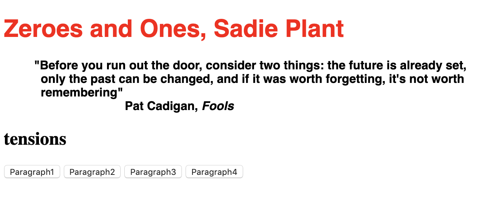
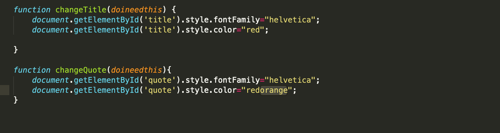
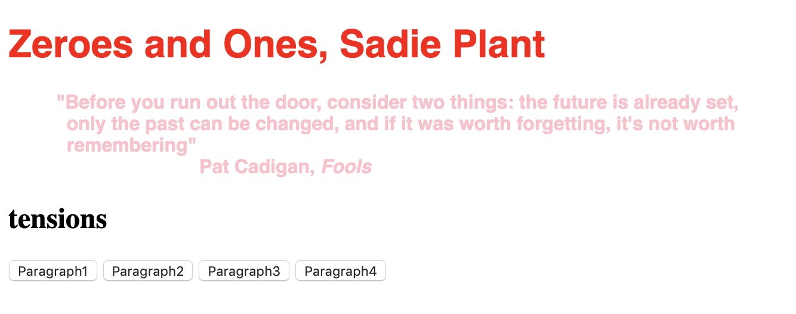
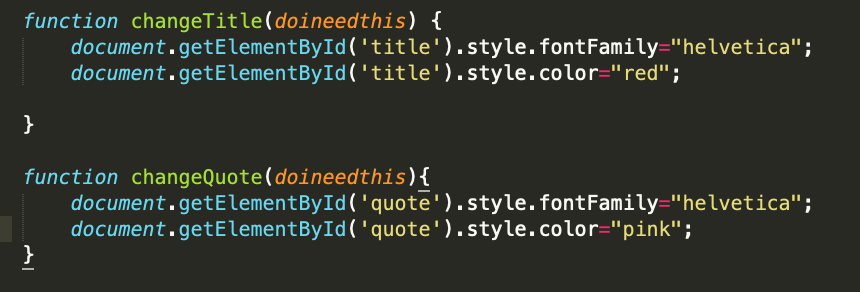

Link to Assignment
Okayyy, sooo…
*Mozart’s 5th*
I have an idea of what I’d like to do to my HTML file, given what we’ve learned in class.
I was inspired by all the buttons we’d use and I personally do like buttons, so I decided
to make it so that the h2 subheading of “tensions” changes to the text of each paragraph
if you click on the button with that paragraph name. I don’t like the default font and want
to go with something more modern corporate tech-feeling because the article is a
foundational cyber-feminist text and the name Zadie just reminds me of Zadie Smith lol.
So, I haven’t had much experience with Javascript Like At All but I kind of have an idea
of how I’ll work this out… So…
Come with me along this process!
So I know that I want to change the subheading, which is “h2” and currently has the word
”tensions” in it. I first gave “h2” an Id of “subheading” so I can tell my JS file what
element exactly I want changed when I click my button. So I make a button on my index.html
page and name it “Paragraph1.” I named my on click function “changeSubHeadingInfo”
because that sounds pretty self explanatory and I just put all the info from paragraph 1 into
the brackets so it’ll show once the button is clicked. I don’t know 100% what the argument
“articleText” does but I just know that it shows the innerHTML/ text only when I set it equal
to something defined… Then, I changed the font family to Helvetica and the font colors to
pinks because #punk.
I then make buttons for the three other paragraphs and set them all to the function
changeSubHeadingInfo. I might take a look at what a query selector is later… maybe…
I’m not sure how it differs from selecting an element by ID because we didn’t go over
it in class. We shall see.
I’m trying to use onmouseover to change the font color of both the quotation and the title
but sometimes only the color of one changes. Certain colors work and certain ones don’t.
Sometimes the text under one ID changes but the other doesn’t. I’m not sure why this is.
I tried doing the camel hump thing and naming the color “redOrange” but it still doesn’t
change the color. Oh, I’m dumb. The color is orangered not redorange haha.




Okay. I think played with colors a bit more. And line breaks and stuff. (nvm. took them
out bc I couldn't figure out how to add them using JS...) I hope those aren’t breaking the
rules… Considering I somehow ended up breaking the rules forthe last two HWs even
though I promise I always read the entire email!!!
Um… So the page tracks how long I’ve been on the page and pops up on the corner…
Haha. Stalker. I think the introduction to this piece was very funny and sums up corporate
office life pretty pretty well. This line was especially funny “We are here because the
editor of this magazine asked me, ‘Can you tell me what code is?’ ‘No,’ I said. ‘First of
all, I’m not good at the math. I’m a programmer, yes, but I’m an East Coast programmer,
not one of these serious platform people from the Bay Area.’” I agree and think even if
we are not natural coders, we should still learn the basics to be able to relay our thought
process to the actual developers and have a basic understanding of how code works. I
liked learning about the different variety of coding languages out there and it gives me
hope that I may become better at Javascript with practice even though it seems so
foreign now.